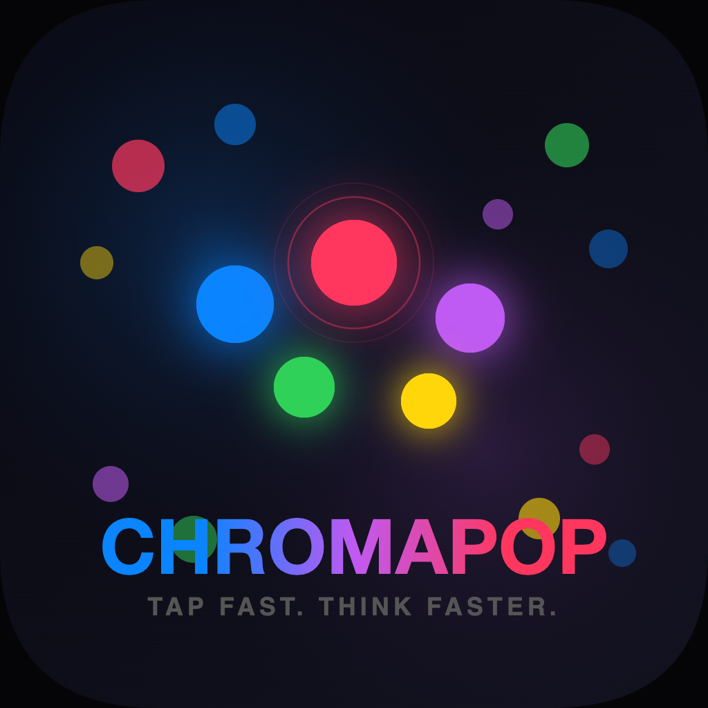

ChromaPopPrivacy Policy
No accounts, ads, analytics or tracking, and nothing is sent to us.
This policy explains how ChromaPop (“the app”), a fast color-matching reaction game for iPhone and iPad, developed by Kevin Fitzgerald, handles information.
Information we collect
None. ChromaPop does not collect, store, sell or share personal information on any server, and it does not include analytics, advertising, crash-reporting or tracking tools of any kind.
Information stored on your iPhone or iPad
To work, the app keeps the following on your iPhone or iPad only:
- Your best scores for each mode, games played, achievement progress and power-ups
- Daily Challenge results, your daily streak and today’s free tries of the ChromaPop+ modes
- Your settings: sound, Colorblind Mode, dot colors and dot theme
- Whether ChromaPop+ is unlocked on this device
It is saved in the app’s own storage on your device (iOS’s standard app preferences) and is never sent to us. Deleting the app removes it.
Game Center (optional)
Leaderboards and achievements use Apple’s Game Center when you are signed in to it on your device. Apple runs Game Center under its own privacy policy: your Game Center name and the scores you post are handled by Apple, and we cannot see your Apple Account. If you are not signed in, the game works the same without leaderboards.
No ads, analytics or tracking
ChromaPop has no advertising, analytics, crash-reporting or tracking code, and the game itself makes no internet requests. Sounds are made on the device, and vibration uses your device’s haptics.
Accessibility setting
If you turn on Differentiate Without Color in iOS Settings, ChromaPop reads that setting so it can show a symbol on every dot. The setting is only read on your device.
Purchases
ChromaPop is sold through Apple’s App Store. Apple handles payment; we never see your payment details.
Children’s privacy
Because the app collects no personal information from anyone, it does not knowingly collect personal information from children.
Changes to this policy
If this policy changes, the new version will be posted on this page with a new effective date. If the app ever begins collecting data, this policy will be updated before that happens.
Contact
Questions about this policy or the app: k.fitzgerald310@gmail.com.